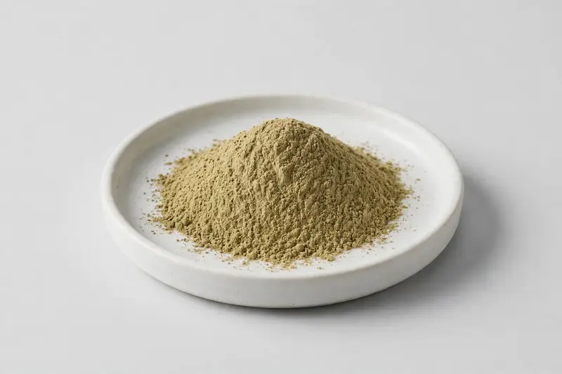

Oat straw — aerial-part extract for calming and skin-care formulations.

Overview
Oat straw extract is a powder produced from the aerial parts of Avena sativa, traded for its avenacoside and flavonoid content. Formulators position it in calming-oriented supplement concepts and in topical skin-care ranges where oat actives are well recognised by consumers. Specification is usually built around an extract ratio or a declared avenacoside level. As a Xi'an-based trading company sourcing through vetted partner producers, we take your target marker and application format and confirm what is realistically achievable.
Specifications below reflect commonly requested options in the market — not a stock list. Share your target spec and we'll confirm exactly what we can supply, honestly.
| Specification | Details |
|---|---|
| Botanical identity | Oat straw aerial-part extract powder (Avena sativa) |
| Marker compound | Commonly requested spec grades: avenacoside-standardised grades and flavonoid grades, plus extract ratios such as 10:1 to 20:1. |
| Appearance | Tan-green to khaki fine powder |
| Mesh size | Typically 80–100 mesh (confirm per inquiry) |
| Testing | COA/TDS arranged on request; scope agreed per your spec |
Applications
Documentation
We don't claim in-house labs or certifications we don't hold. COA and TDS documents can be arranged on request, and testing scope is agreed against your specification before supply.
FAQ
Related products
Salvia officinalis
Key marker: 10:1 / rosmarinic acid
View specs →Perilla frutescens
Key marker: ALA oil / rosmarinic acid
View specs →Diosmin (citrus-derived flavonoid)
Key marker: Diosmin 90%+
View specs →Vicia faba
Key marker: Protein 60-90%
View specs →Eschscholzia californica
Key marker: 4:1 to 10:1 ratio
View specs →Send your target spec and volumes — we'll respond with a tailored quotation.
Request a Quote